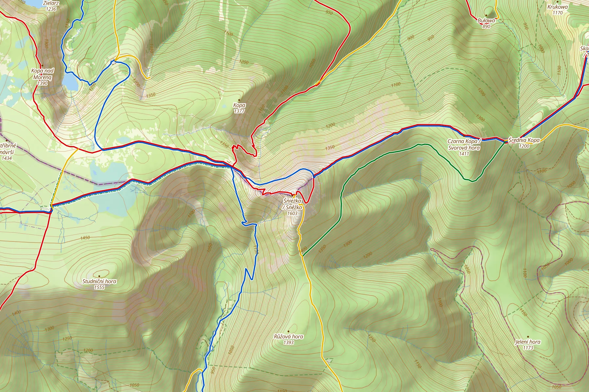
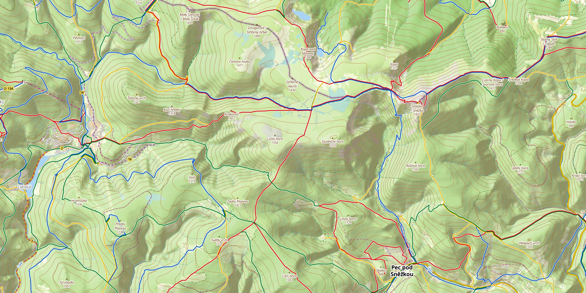
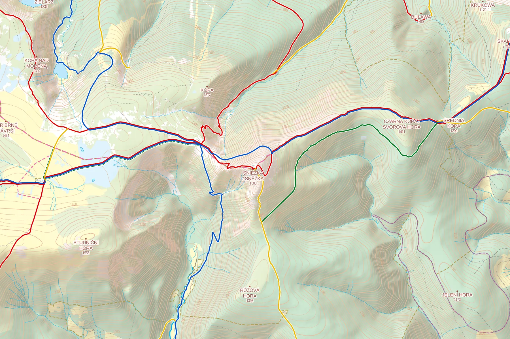

Turistická
Pro výlety. Sytý les, výrazný reliéf, značené trasy KČT v pruzích vedle sebe, cyklotrasy s čísly. Dálnice jsou zelené, aby v krajině nekřičely, pěší zóny ve městech tvoří jednu světlou plochu.

Czech Tourist Mapturistická a topografická mapa Česka
Značky KČT tak, jak je znáte z lesa, reliéf a vrstevnice z leteckého laserového skenování a dva styly: turistický a topografický. Celá z otevřených dat, pro web i offline v mobilu.
Mapy z otevřených dat většinou vypadají jako OpenStreetMap s barevnými čárami navíc. Kdo chodí po Česku, zná ale jiný obraz: bílo-červené pruhy na stromech, hnědé vrstevnice, jemně stínované kopce a popisky, ze kterých hned poznáte město od samoty.
Czech Tourist Map tenhle obraz skládá z volně dostupných dat. Začala jako vzhled pro offline mapy v Androidu (Mapsforge), dnes je to sada souborů PMTiles a stylů pro MapLibre. Stejná mapa tak běží na webu i v mobilní aplikaci bez signálu.
Mapa se jednou měsíčně postaví znovu z aktuálních dat OpenStreetMap. Vše, co k tomu potřebuje, je v repozitáři.

Pro výlety. Sytý les, výrazný reliéf, značené trasy KČT v pruzích vedle sebe, cyklotrasy s čísly. Dálnice jsou zelené, aby v krajině nekřičely, pěší zóny ve městech tvoří jednu světlou plochu.

Inspirovaná Základní topografickou mapou ČÚZK (ZTM10). Bílý podklad, světlý les, azurová voda, silnice v oranžové a žluté, názvy vrchů velkými písmeny a písma podle legendy ZTM10.
Posuňte jezdcem a porovnejte obě mapy. Místo vyberete pod obrázkem.
Obě mapy se posouvají spolu. Přibližte si třeba svůj oblíbený kopec.
Stačí jeden skript. Vrátí běžnou mapu MapLibre, takže přidáte značky, trasy i vlastní vrstvy jako obvykle.
<div id="map" style="height: 500px"></div>
<script src="https://maps.example.com/map.js"></script>
<script>
CzechTouristMap.createMap('map', { style: 'topo', center: [16.6, 49.2], zoom: 12 });
</script>Styl tourist nebo topo. Seznam souborů pro offline stažení je v latest.json, popis v dokumentaci.